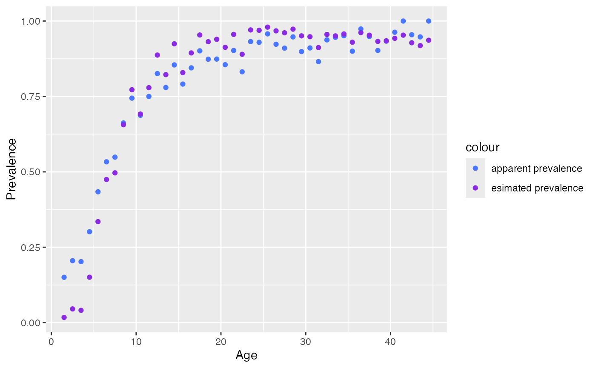

Imperfect test
Function correct_prevalence() is used for estimating the
true prevalence if the serological test used is imperfect
Arguments:
agethe age vectorposthe positive count vector (optional if status is provided).totthe total count vector (optional if status is provided).statusthe serostatus vector (optional if pos & tot are provided).init_sesensitivity of the serological test (default value0.95)init_spspecificity of the serological test (default value0.8)study_size_sesample size for sensitivity validation study (default value1000)study_size_spsample size for specificity validation study (default value1000)chainsnumber of Markov chains (default to1)warmupnumber of warm up runs (default value1000)iternumber of iterations (default value2000)
The function will return a list of 2 items:
infocontains estimated values for se, sp and corrected seroprevalencecorrected_seroreturn a data.frame withage,sero(corrected sero) andpos,tot(adjusted based on corrected prevalence)
# estimate real prevalence
data <- rubella_uk_1986_1987
output <- correct_prevalence(data$age, pos = data$pos, tot = data$tot, warmup = 1000, iter = 4000, init_se=0.85, init_sp = 0.8, study_size_se=1000, study_size_sp=3000)
#>
#> SAMPLING FOR MODEL 'prevalence_correction' NOW (CHAIN 1).
#> Chain 1:
#> Chain 1: Gradient evaluation took 5.3e-05 seconds
#> Chain 1: 1000 transitions using 10 leapfrog steps per transition would take 0.53 seconds.
#> Chain 1: Adjust your expectations accordingly!
#> Chain 1:
#> Chain 1:
#> Chain 1: Iteration: 1 / 4000 [ 0%] (Warmup)
#> Chain 1: Iteration: 400 / 4000 [ 10%] (Warmup)
#> Chain 1: Iteration: 800 / 4000 [ 20%] (Warmup)
#> Chain 1: Iteration: 1001 / 4000 [ 25%] (Sampling)
#> Chain 1: Iteration: 1400 / 4000 [ 35%] (Sampling)
#> Chain 1: Iteration: 1800 / 4000 [ 45%] (Sampling)
#> Chain 1: Iteration: 2200 / 4000 [ 55%] (Sampling)
#> Chain 1: Iteration: 2600 / 4000 [ 65%] (Sampling)
#> Chain 1: Iteration: 3000 / 4000 [ 75%] (Sampling)
#> Chain 1: Iteration: 3400 / 4000 [ 85%] (Sampling)
#> Chain 1: Iteration: 3800 / 4000 [ 95%] (Sampling)
#> Chain 1: Iteration: 4000 / 4000 [100%] (Sampling)
#> Chain 1:
#> Chain 1: Elapsed Time: 0.461 seconds (Warm-up)
#> Chain 1: 0.857 seconds (Sampling)
#> Chain 1: 1.318 seconds (Total)
#> Chain 1:
# check fitted value
output$info[1:2, ]
#> mean se_mean sd 2.5% 25% 50%
#> est_se 0.9027378 1.009051e-04 0.006278353 0.8902630 0.8985138 0.9028038
#> est_sp 0.8028106 9.693863e-05 0.006926575 0.7897005 0.7980980 0.8027309
#> 75% 97.5% n_eff Rhat
#> est_se 0.9070585 0.9149506 3871.376 0.9996981
#> est_sp 0.8075248 0.8163678 5105.560 0.9997475
# compare original prevalence and corrected prevalence
ggplot()+
geom_point(aes(x = data$age, y = data$pos/data$tot, color="apparent prevalence")) +
geom_point(aes(x = output$corrected_se$age, y = output$corrected_se$sero, color="esimated prevalence" )) +
scale_color_manual(
values = c("apparent prevalence" = "royalblue1", "esimated prevalence" = "blueviolet")
)+
labs(x = "Age", y = "Prevalence")
Fitting corrected data
Data after seroprevalence correction
suppressWarnings(
corrected_data <- farrington_model(
age = output$corrected_se$age, pos = output$corrected_se$pos, tot = output$corrected_se$tot,
start=list(alpha=0.07,beta=0.1,gamma=0.03))
)
plot(corrected_data)
#> Warning: No shared levels found between `names(values)` of the manual scale and the
#> data's fill values.
Original data
suppressWarnings(
original_data <- farrington_model(
age = data$age, pos = data$pos, tot = data$tot,
start=list(alpha=0.07,beta=0.1,gamma=0.03))
)
plot(original_data)
#> Warning: No shared levels found between `names(values)` of the manual scale and the
#> data's fill values.